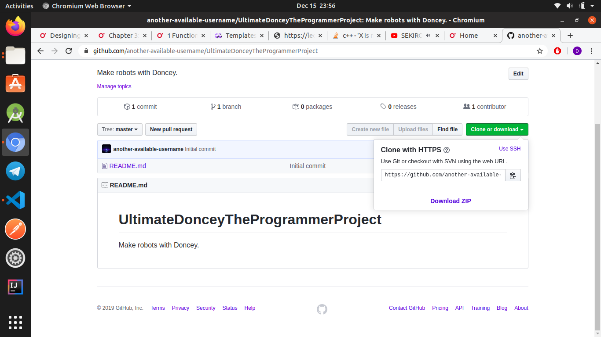

This tutorial assumes that you already have Git installed.
Like the below, first, create a new repository in your Github account.
Fill in the required info.
Copy the thing that it shows, after you click the clone or download.

Now, assuming you are using Windows, please use cmd; in my case, I am using bash because I am using Linux.
Type in the command in the below picture.
Make any file. In my case, I am just creating a text file.
Type in all the commands you see below.